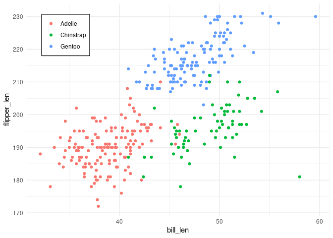

The goal of atelier is to gather small helper functions I use across my projects.
Installation
You can install the development version of atelier from GitHub with:
# install.packages("pak")
pak::pak("tblk/atelier")Plots
library(ggplot2)
penguins |>
ggplot(aes(x = bill_len,
y = flipper_len,
colour = species)) +
geom_point() +
theme_minimal() +
atelier::legend_inside() # after calling theme_minimal()
#> Warning: Removed 2 rows containing missing values or values outside the scale range
#> (`geom_point()`).